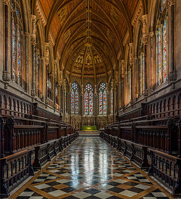

XHTML is the language of the world
Greetings from your webmaster
Web Technologies and
Mary
had a
little
lamb.
Solar Impulse 2 (pictured) becomes the first solar-powered aircraft to circumnavigate the Earth, completing a 16-month voyage.
Did you know...
... that Voltaire P. Twombly ,continued to carry his company’s flag after being knocked to the ground by cannon fire during the Battle of Fort Donelson?
... that the remix record for Disclosure's second extended play The Face features a re-cut from Hot Chip's Joe Goddard?
... that Marco Mena was the first Mexican to pursue a master's degree in public policy from the University of Chicago?
... that the Tokushima-Kōchi at-large district elected its first representative to the House of Councillors this month?
... that the priest Nicolae Cristea was a newspaper editor for eighteen years, until his bishop fired him for writing an article sharply critical of Hungarian Prime Minister Kálmán Tisza?
Mathematical Equation : x23 + y2

St John's College, Cambridge
The interior of the chapel at St John's College, Cambridge. Constructed between 1866 and 1869 to replace a smaller chapel which dated back to the 13th century, this chapel was designed by George Gilbert Scott in a style similar to that of Exeter College, Oxford. It is home to the Choir of St John's College, which has sung daily services since the 1670s.
On this day ( 28 July 2016 )
- July 28: World Hepatitis Day
- 1821 : Peruvian War of Independence: Argentine general Jose de San Martin declared the independence of Peru from Spain.
- 1866 : At the age of 18, Vinnie Ream became the youngest artist and first woman to receive a commission from the United States government for a statue that of Abraham Lincoln in the US Capitol rotunda.
- 1914 : Austria-Hungary declared war after rejecting Serbia's conditional acceptance of only part of the July Ultimatum following the assassination of Archduke Franz Ferdinand in Sarajevo, starting World War I.
- 1932 : US President Herbert Hoover ordered the eviction of the "Bonus Army" : a group of veterans who were occupying government property to demand immediate payment for money owed.
- 2001 : At the World Aquatics Championships in Fukuoka, Japan, Australian Ian Thorpe became the first swimmer to win six gold medals at a single World Championships.
Did You Know
- ...that in recent years Mediterranean alcoholic beverages have been subject of intense scientific study?
- ...that the supermassive black hole at the center of the quasar OJ287 has been measured as weighing 18 billion times the mass of the Sun, six times heavier than the previous record holder?
- ...that the origins of Castle Lake in California date to the Pleistocene Era (more than 10,000 years ago) when a glacier carved a basin in the location of the current lake?
- ...that 2002's Hurricane Elida was the first hurricane to be observed by the MERIS sensor aboard the ESA's satellite Envisat?
- ...that for a pure wave motion in fluid dynamics, the Stokes drift velocity is the average velocity when following a specific fluid parcel as it travels with the fluid flow?